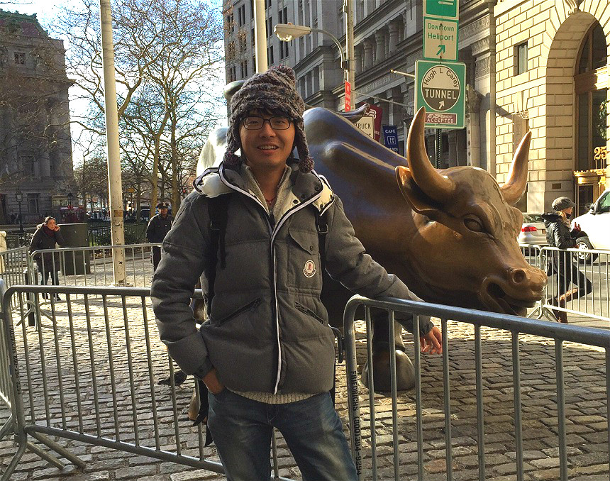

Qingan Yan ['tsiŋ-æn jæn]
|  |
I am a fifth year PhD student at Graphics and Vision Lab of Wuhan University.
Additionally, I am now looking for Postdoc positions on computer vision and graphics.
Email: yanqingan at whu.edu.cn
Homepage: This page |
CSDN in Chinese
Mail: Room B501, Computer School, Wuhan University, China, 430072
CV
|
Research Interest
|
My work lies in the field of computer vision and graphics. In particular, I tackle the challenges in 3D modeling, structure from motion, scene and shape analysis.
These days, I have been attracted by the problem of correspondence (on both features and pixels) because I am interested in how to densely and accurately represent and reconstruct challenging 3D scenes, such as thin objects, texture-less shapes and the vegetation. Meanwhile, I am also interested in the application of deep learning in semantic shape analysis and scene recovery.
|
Papers
2016
2014
2011

|
Vision Based Multi-touch System Used in Visualization
Yadong Wu, Qingan Yan, Jie Fu, Hongli Deng and Lili Song
Proceedings of Pacific Visualization 2011, poster
Video
|
Patents
Optical Multi-touch Point Detection Method Based on Visual Attention Model (in Chinese)
Yadong Wu, Qingan Yan and Zhiqin Liu (CN102855025B, granted, Jun.17.2015)
|